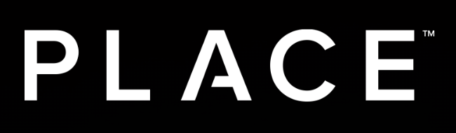
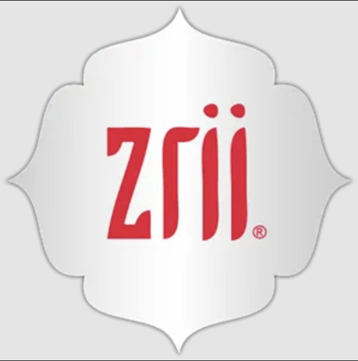

Chase Smith
Summary
I am a creative and detail oriented person with experience in customer service, project management,
product development, and trademarks & licensing - working directly with licensees, retailers, and
other partners. My goals are to create products for users who are passionate about the activities
they are involved in, making it easier for them to be consistent in their activities and in using
the product. I enjoy creating programs, activations and experiences to engage consumers. My
abilities have turned ideas into successful realities.*
Work Experience
-

April 2022 - Present
- Managed team of Junior and Senior Front/Back End Web Developers
- Planned and created projects and tasks with various department stakeholders
- Coordinated tasks with support for bug fixes and feature development
- Coordinated with Senior Engineer to test and deploy fixes and features
-
2015 - 2023
- Review, approve, monitor, and enforce the proper use of University trademarks
- Manage relationships with licensees and retailers to grow our respective businesses through activations, events, and promotions
- Collaborate with campus partners to further connect with fans and the community
- * USSSLC.utah.edu
-
Senior International Associate - Zrii

2012-2015
- Directed the registration of company products in Latin America for importation
- Coordinated with consultants, attorneys, & sales teams to regulate labels and marketing materials
Education
- Qualified Licensing Practioner - CLS Licensing International (2019)
- Bachelor's Degree of Marketing - University of Utah (2017)
Skills
- Communication & Collaboration ⭐️⭐️⭐️⭐️⭐️
- Spanish ⭐️⭐️⭐️⭐️⭐️
- Microsoft & Google Office Suite ⭐️⭐️⭐️⭐️
- Project Management Software ⭐️⭐️⭐️
- Basic HTML ⭐️